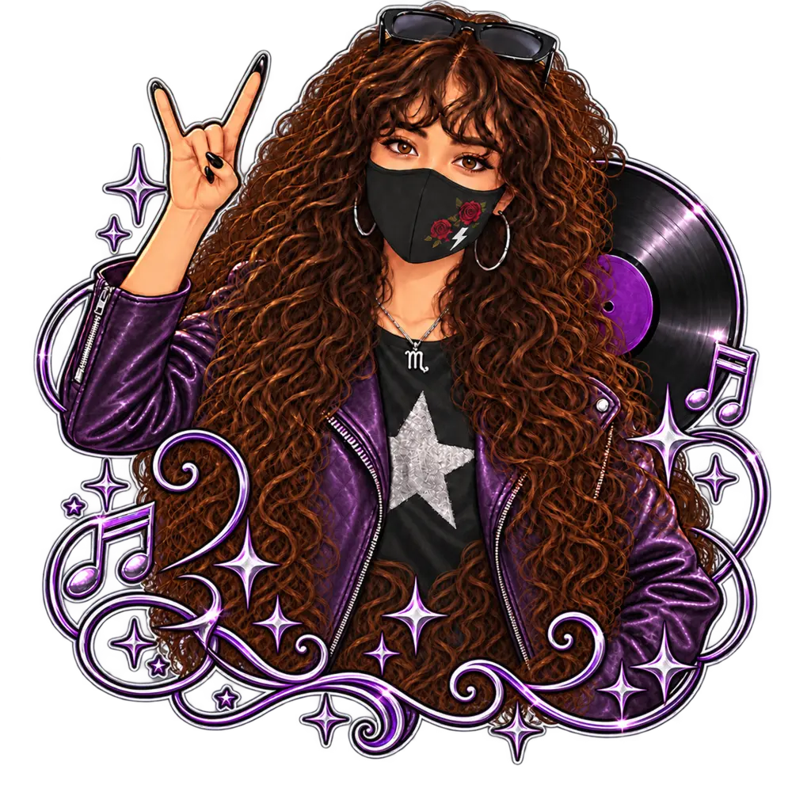

 ESCORPIÓN Maya Constelación de Escorpión con sus estrellas principales Trazado de Escorpión con Acrab, Dschubba, Antares, Alniyat, Larawag, Sargas, Shaula y Lesath. Acrab Dschubba Antares Alniyat Larawag Sargas Shaula Lesath 109865673 Entrar✦